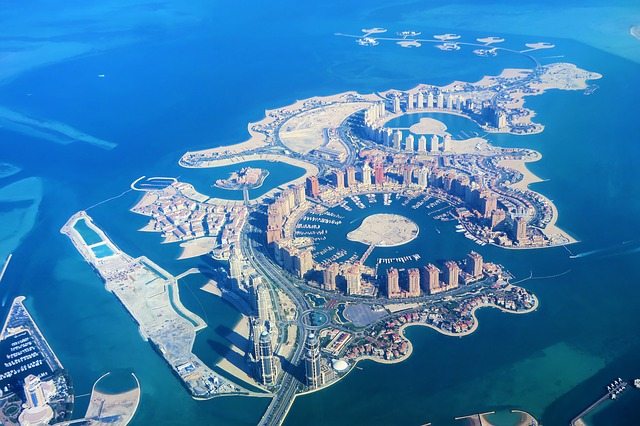
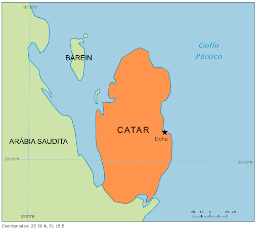
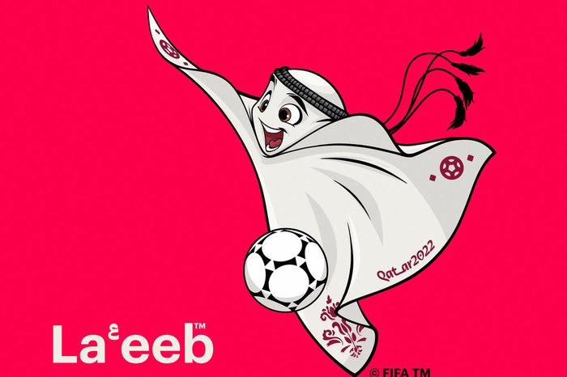

Qatar
Catar (ou Qatar, na transcrição internacional) é um país do Oriente Médio, pequeno em extensão e grande economicamente. O país árabe, oficialmente chamado de Estado do Catar, corresponde a um emirado, ou seja, é um território administrado pelo membro da classe dominante, o emir.
Localização
O país localiza-se na península arábica na Ásia Continental, correspondendo a uma área de aproximadamente 11.610 km2 até o norte do Golfo Pérsico. O Catar faz fronteira com a Arábia Saudita e é separado por um estreito do Golfo Pérsico do país Bahrein.
População
A população do Catar é de aproximadamente 2.743.901 habitantes.
Principais atividades economicas
A economia baseia-se, especialmente, na exportação de petróleo e gás natural, que juntos representam em torno de 50% do Produto Interno Bruto do país. De acordo com o Observatório da Complexidade Econômica, o Catar possui uma balança comercial positiva com saldo de US$30,7 bilhões.O Catar tem agora como objetivo diversificar a economia e modernizar o país. A Autoridade de Investimento do Catar é o principal órgão do governo catari para alcançar esses objetivos.
O país é o 14º no ranking de competitividade do Fórum Econômico Mundial.


A copa do mundo
A Copa do Mundo FIFA de 2022 ou Campeonato Mundial de Futebol FIFA de 2022 será a vigésima segunda
edição deste evento esportivo, um torneio internacional de futebol masculino organizado pela Federação
Internacional de Futebol, que ocorrerá no Catar.Com sete cidades-sede, o campeonato será disputado
entre 21 de novembro e 18 de dezembro, primeira vez em que é disputado no final do ano. A edição de
2022 será a primeira realizada no Oriente Médio e a última a ter o formato de 32 equipes, já que a
competição terá uma mudança no formato e número de equipes na edição de 2026, quando será sediada no
Canadá, Estados Unidos e México, contando com a participação de 48 equipes. Copa do Mundo FIFA, mais conhecida no Brasil pelo nome de Copa do Mundo e também conhecida em
Portugal como Campeonato do Mundo de Futebol, Campeonato Mundial de Futebol, Campeonato Mundial FIFA,
ou simplesmente Mundial, é uma competição internacional de futebol que ocorre a cada quatro anos, com
exceção de 1942 e 1946, quando não foi realizado por causa da Segunda Guerra Mundial. Essa competição,
em 1928 na França, sob a liderança do presidente Jules Rimet, está aberta a todas as federações
reconhecidas pela FIFA (Federação Internacional de Futebol Associado, em francês: Fédération International
de Football Association). O antigo nome da taça faz referência a Jules Rimet. A primeira edição ocorreu
em 1930 no Uruguai, cuja seleção saiu vencedora.

Com exceção da Copa do Mundo de 1930, o torneio sempre foi realizado em duas fases. Organizada pelas confederações continentais, as Eliminatórias da Copa do Mundo permitem que as melhores seleções de cada continente participem da competição, que ocorre em um ou mais países-sede. O formato atual da Copa do Mundo é com trinta e duas equipes nacionais por um período de cerca de um mês. A partir da edição de 2026 o torneio contará com a participação de 48 equipes.
A Fifa apresentou o mascote oficial da Copa do Mundo de 2022. Trata-se de La'eeb, um simpático lenço de cabeça masculino tradicional da cultura árabe. Segundo a Fifa, a palavra La’eeb significa jogador habilidoso em árabe.
Clique nos titulos do grupo para saber mais sobre as seleções, datas, horarios e jogos
| Group A |
| 1 |
 |
Catar |
| 2 |
 |
Equador |
| 3 |
 |
Senegal |
| 4 |
 |
Holanda |
| Group C |
| 1 |
 |
Argentina |
| 2 |
 |
Arabia Saudita |
| 3 |
 |
Mexico |
| 4 |
 |
Polonia |
| Group D |
| 1 |
 |
Franca |
| 2 |
 |
Dinamarca |
| 3 |
 |
Tunisia |
| Group E |
| 1 |
 |
Espanha |
| 2 |
 |
Alemanha |
| 3 |
 |
Japao |
| Group F |
| 1 |
 |
Belgica |
| 2 |
 |
Canada |
| 3 |
 |
Marrocos |
| 4 |
 |
Croacia |
| Group G |
| 1 |
 |
Brasil |
| 2 |
 |
Servia |
| 3 |
 |
Suica |
| 4 |
 |
Camaroes |
| Group H |
| 1 |
 |
Portugal |
| 2 |
 |
Gana |
| 3 |
 |
Uruguai |
| 4 |
 |
Coreia do Sul |